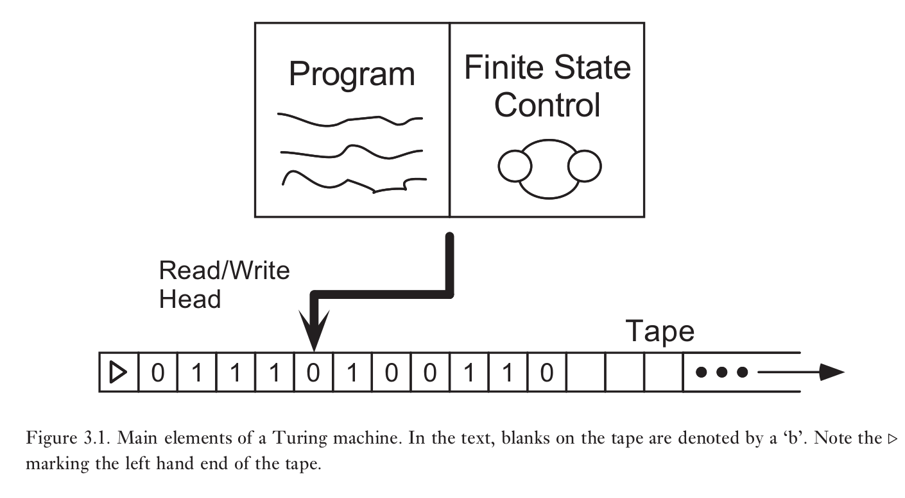
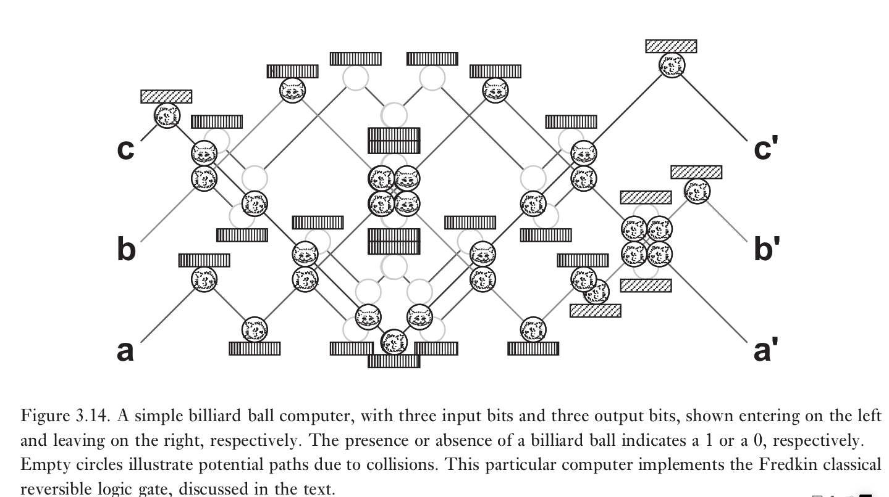
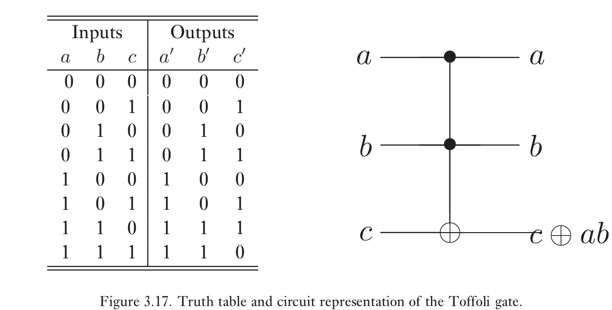

1.3.2.1.1. 计算模型
图灵机

图灵机有四个主要组成部分
有限状态控制
图灵机的有限状态控制由一组有限的内部状态，$q_1,\cdots,q_m$组成。除此之外还有两个特殊的态$q_s,q_h$，分别叫做开始状态和结束状态。计算开始时，图灵机处在开始状态$q_s$，实施计算使得图灵机的内部状态发生改变，结束时变为$q_h$,意味着计算完成。
磁带
图灵机的磁带单边无限。它由无限个磁带方块序列组成，编号为$0,1,2,3.\cdots$。每个块包含着某个包含有限个分立符号字母表$\Gamma$中的一个字符。
磁带读写指针
程序
图灵机的程序是一个$
通用图灵机
固定程序和内部状态，只有磁带的初始内容可变的图灵机可以模拟任何图灵机，与该图灵机所以时间为多项式的关系。
电路
一组确定的门可以用来计算任意函数$f:{0,1}^n\to{0,1}^m$
1.3.2.1.2. 计算问题分析
分析计算问题取决于以下三个基本问题的答案
- 什么是计算问题？这里讨论决定性问题。
- 怎样确定算法解决给定的计算问题？什么算法可以用，有没有通用算法，怎样确定算法按照预期进行
- 解决给定的计算问题所需的最少资源是多少？时间，空间，能量
量化计算资源
O:上界
$\Omega$:下界
$\Theta$:同阶
计算复杂度
对于给定的n比特的输入，如果能够在n的多项式资源内解决，那么这个问题就是简单的，否则就是困难的。
强Church–Turing论题
任何计算模型都可以被概率图灵机模拟，基本操作数最多为多项式增加。
决定性问题和计算复杂度P与NP
形式语言是一个字母表上的某些有限长字符串的集合。一个形式语言可以包含无限多个字符串。决定性问题可以用形式语言编码
如果一个问题可以在有限k的$TIME(n^k)$时间内解决，那么就称之为多项式可解。$TIME(n^k)$中的所有语言的集合记为P
如果存在图灵机M具有以下性质，那么语言L属于NP
- 如果$x\in L$,那么存在见证字符串w使得M从状态$x-blank-w$开始，并且在$|x|$的多项式时间内停止于$q_Y$状态。
- 如果$x\notin L$,那么对于任意尝试作为见证的字符串w，都有M从状态$x-blank-w$开始，在$|x|$的多项式时间内停止于$q_N$状态。
类似地，可以定义coNP,将上述两条件交换
NP完全问题：最难的NP问题，若NP完全问题有多项式时间解，则P=NP
问题约化

一些复杂度类
L：对数时间复杂度
P：多项式时间复杂度
NP：多项式时间内验证
PSPACE：多项式空间
EXP：指数时间复杂度 尽管该关系被广泛认为是严格的，但没有任何一个式子被证明是严格成立的。不过由时间分层定理可知，$P$是$EXP$的真子集。因此上式至少有一个式子严格成立
时间分层定理：$TIME(f(n))$是$TIME(f(n)\log^2(f(n)))$的真子集
空间分层定理：$SPACE(f(n))$是$SPACE(f(n)\log(f(n)))$的真子集
MAXSNP：可以通过近似方法有效验证的问题集合
BPP(bounded-error probabilistic time): 所以具有以下特性的语言L集合：存在概率图灵机M，如果$x\in L$,那么M有至少$3/4$的概率接受x，如果$x\notin L$,那么M有至少$3/4$的概率拒绝x。这里$3/4$可任选大于$1/2$的数
能量与计算
Landauer（第一形式）:
如果一个计算机擦除了一比特信息，那么释放到环境中的能量至少为$k_B T\ln 2$。$k_B$为玻耳兹曼常数，$T$为计算机环境温度
Landauer原则（第二形式）:
如果一个计算机擦除了一比特信息，那么环境的熵增至少为$k_B\ln 2$。$k_B$为玻耳兹曼常数
Landauer原则给出了能量消耗的下限，如果所有计算都是可逆的，那么几乎可以不消耗能量。此时能量损耗主要来自于其他物理过程，例如噪声。
这里给出两种可逆通用门
Fredkin门
利用撞球模型可以制造Fredkin门

真值表如下

Toffoli 门
